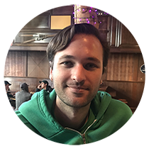

|  |
Resume PDF
|
| |
|
| |
OBJECTIVE
Highly motivated, accomplished digital artist seeking to utilize my creative skills to produce exceptional 2D and 3D art for AAA games and film. |
| |
|
EDUCATION |
| 2009 - 2013 |
Academy of Art University - San Francisco, CA
|
| |
MFA, Animation and Visual Effects (Emphasis in 3D Modeling) |
| |
| 2001 - 2005 |
Illinois Institute of Art - Chicago, IL
|
| |
BFA, Multimedia and Animation (Honors) |
|
EXPERIENCE |
2021 - Present |
StormcloudFX - South San Francisco, CA
http://www.stormcloudfx.com |
| |
Senior 3D Artist - Unannounced Project
Responsible for translating concept art into fully realized CG shots for feature-film. This process often included every aspect of 3D work from modeling, texturing and animation to lighting and shader set-up for rendering. Worked with a small team to meet tight deadlines while also ensuring we achieved the vision laid out by the client. |
| |
3D Artist - (Short Film) (2021)
• Modeling, UV's and CG camera matching. |
2018 - 2021 |
Schawk! - San Francisco, CA
https://sgkinc.com/en/ |
| |
Color and Retouching Operator
Responsible for retouching both 3D renderings and photography to create ad campaigns for some of the top brands in the tech industry. Used non-destructive workflows to edit everything from textures, reflections, and colors to hardware look and feel based on client feedback. |
| 2016 - 2018 |
StormcloudFX - South San Francisco, CA
http://www.stormcloudfx.com |
| |
CG Modeler - MARS (TV Series) (2018) Season 2 Worked with the modeling team to create high poly assets with clean topology. Responsible to UV unwrapping and layout. |
| |
CG Modeler - Black Mirror (TV Series) (2017) Episode: USS Callister
Responsible for modeling and UV layout of high poly assets. Worked with texture artist to develop tileable textures using Substance Designer. |
| |
CG Modeler - MARS (TV Series) (2016) Season 1
Responsible for modeling and UV layout of high poly assets.
|
| 2015 - 2016 |
Immersio Innovations - San Francisco, CA
http://www.immersioinnovations.com |
| |
Contract 3D Artist
Worked with various different clients to create prototypes that tested practical applications of VR technology. Responsible for designing and creating in-game assets for Unity, including modeling, texturing, rigging and animation.
|
| 2014 - 2015 |
Zombot Studio - San Francisco, CA
http://www.zombotstudio.com/ |
| |
3D Artist - Exogears
Responsible for creating in-game 3D assets based on existing concept art. Created high resolution models for use in generating normal maps for low polygon models. Textured models using Photoshop, DDO and NDO. Generated diffuse, specular, and normal maps while ensuring all assets displayed properly in Unity.
|
| 2013 - 2014 |
Immersio Innovations - San Francisco, CA
http://www.immersioinnovations.com/ |
| |
Character Artist - (Unreleased title)
Designed characters from thumbnail silhouettes to the finished hi-rez sculpt. Was responsible for retopology and normal map generation for optimized meshes. Textured models using Mudbox, Photoshop and CrazyBump. Took characters every step of the way through implementation into Unity including rigging, painting weights, and producing animations. Collaborated with a small team of programmers, designers, and artists to contribute game development ideas and art direction. Worked to set a production schedule to ensure deadlines were met. |
| |
Modeler / Texture and Lighting Artist - Client Prototype
Created all art assets for an interactive user experience in Unity. Was responsible for creating concept art and utilizing client feedback to create the final textured models. Created environment lighting which included both baked and dynamic lights based on the needs of the scene.
|
2006 - 2009 |
Freelance Artist - Chicago, IL |
| |
Logo / Web Illustrator
Utilized traditional drawing and painting skills to create iconic branding for clients with needs ranging from web design to logo illustration. |
| |
|
SOFTWARE |
- Zbrush
- Maya
- Substance Painter
- NDO / DDO
- Mudbox
- 3D Studio Max
- Photoshop
- Unity
- Keyshot
- Vray
|
SKILLS |
- Texturing and UV layout
- Normal map generation from high resolution Zbrush sculpts
- Rigging and animation
- Sculpting in both digital and traditional mediums
- Strong tradition art skills in drawing, painting and anatomical understanding
- Organic and Hard surface modeling
- Able to complete finished models from rough concept art while maintaining an understanding of original design’s intent
- Rendering and compositing
- Pre-production concepting in character, vehicle and prop design
|
| |
|